People
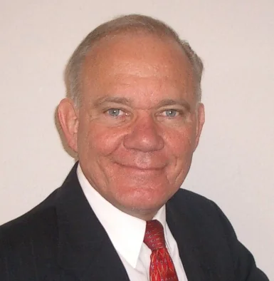
John C. Cook
John Cook founded Rock Lake Advisors in 2009 following a successful career in international business. He hails from Wisconsin and has spent his entire career in London, Brussels, Frankfurt and Zurich. Prior to founding Rock Lake, his prior positions included Director, WJ Hopper & Co Ltd (London); Abteilungsdirektor / Head of Equity Origination, Security Pacific Merchant Bank (Frankfurt); Senior Account Executive, Merrill Lynch International (Brussels); Managing Director, Univestors Family Office (Brussels); and Marketing Manager Middle East, International Harvester (Brussels). John has served on the boards or advisory boards of Kyron Capital Limited, Wishpoint Inc. (Scandid, Travelx), YFret Technologies, Viamagus Technologies, Sanguine Investment Management, Block Aero Technologies, Rockton Aviation and MR Access. John is a member and supporter of the Swiss Private Equity and Corporate Finance Association (SECA); Horasis Global Visions Community; Swiss American Chamber of Commerce; Swiss Swedish Chamber of Commerce; Swiss Indian Chamber of Commerce; Zariya Foundation; Select USA Investment Summit and Thunderbird School of Global Management. John is Chairman Emeritus of the Thunderbird Global Private Equity Center, a thought leadership platform he founded at Thunderbird School of Global Management in 2004. He was awarded the distinguished Jonas Mayer Award, chaired the Thunderbird European Alumni Association and is a long-standing member of the Thunderbird Leadership Councils. John graduated cum-laude with a BSIM from the Krannert School of Management at Purdue University (1974), completed the pre-med curriculum at University of Washington (1977), obtained an MBA in International Management from Thunderbird School of Global Management (1979), and has completed advanced management studies at Oxford University, England.
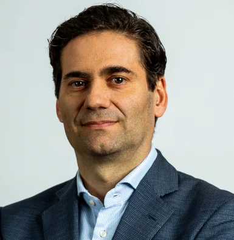
Javier Rivas CFA FIA
With 26 years of experience, Javier Rivas has worked for a range of top-tier firms in asset management (Credit Suisse), insurance (Zurich, Generali), reinsurance (Swiss Re), private equity (Elliott), actuarial consulting (Tillinghast – currently Willis Towers Watson), as well as fundraising (Rock Lake Advisors). Initially developing his career as a senior actuary in technical roles, he then moved into more transaction focused areas, holding executive positions as Head of the EMEA Life & Health Structured Reinsurance Solutions in Swiss Re and was responsible for a USD700m fund within the Insurance Linked Strategies hedge fund unit of Credit Suisse. In private equity, he worked on M&A with Elliott Management as Head of Business Development of MedVida, their leading European asset intensive life run-off proposition. In the last five years, as a President and Managing Director at Rock Lake Advisors he assisted in fundraising a range of clients across real estate, venture capital, private equity, insurance, and technology. Javier is a qualified actuary (FIA), fellow of the UK Institute of Actuaries, and the Spanish Institute of Actuaries. Additionally, he holds the CFA (Chartered Financial Analyst) qualification. Prior to that he obtained university degrees in Business Administration and in Financial and Actuarial Science in ICADE (Universidad Pontificia de Comillas)
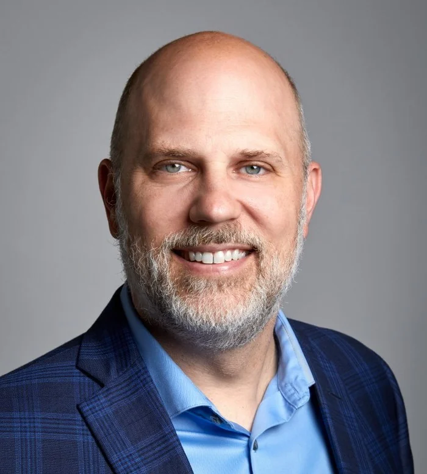
Tom Rose
Tom Rose brings over 20 years of experience in capital raising and investor relations to Rock Lake. Prior to joining Rock Lake Tom was at Barclays Global Investors and BlackRock as a Director with the U.S. Institutional Business. He was responsible for raising assets across the BlackRock platform with institutional investors in the U.S., including pension plans, foundation and endowments. Tom spent several years at Neuberger Berman as a Senior Vice President raising assets among the intermediary market focusing primarily on Neuberger Berman’s alternatives platform. More recently Tom helped build the U.S. business for a Canadian crypto currency firm 3iQ and was the Co-Head of Distribution. Most recently Tom served as the Head of Capital Markets North America for an international reinsurance firm. Tom holds the series 7 and 63 license and is CFA charter holder. He is on the board of directors and serves as the Treasurer for the Peter Pan Foundation.
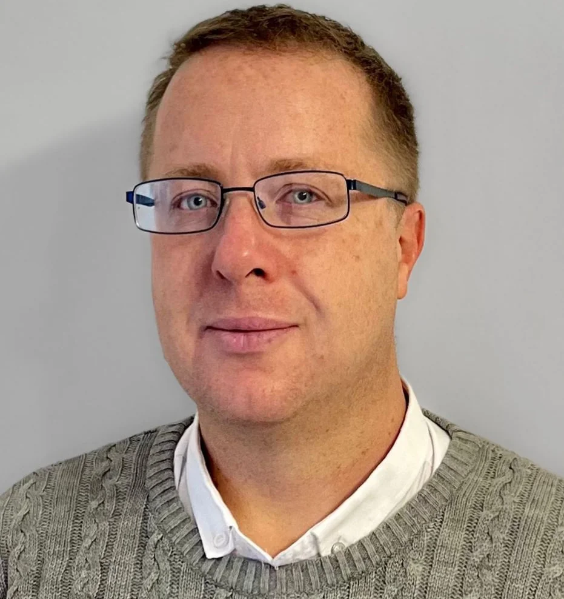
Mattias Eng
Mattias Eng is based in London and joined Rock Lake from a hedge fund where he managed the fund’s structured solutions investments. In addition to buy-side experience, he also brings a broad range of sell side experience in the area of structuring and distributing bespoke investment and credit solutions from several top-tier investment banks including JP Morgan, BNP Paribas and Royal Bank of Scotland from a career spanning two decades.
Prior to working in the capital markets, Mattias held several senior positions at UK life insurer Friends Provident and he spent his early professional years at the World Bank.
He is a CFA Charterholder and is the former Chairman of the CFA Society of London’s Insurance Special Interest Group. He has published a range of articles in professional journals and magazines and is a frequent contributor at conferences. He did his Doctoral Studies in Economics and Mathematics at George Mason University from which he also holds Bachelors degrees in Finance and Mathematics (high distinction) and Economics (highest distinction and departmental recognition of outstanding academic achievement).
Prior to working in the capital markets, Mattias held several senior positions at UK life insurer Friends Provident and he spent his early professional years at the World Bank.
He is a CFA Charterholder and is the former Chairman of the CFA Society of London’s Insurance Special Interest Group. He has published a range of articles in professional journals and magazines and is a frequent contributor at conferences. He did his Doctoral Studies in Economics and Mathematics at George Mason University from which he also holds Bachelors degrees in Finance and Mathematics (high distinction) and Economics (highest distinction and departmental recognition of outstanding academic achievement).
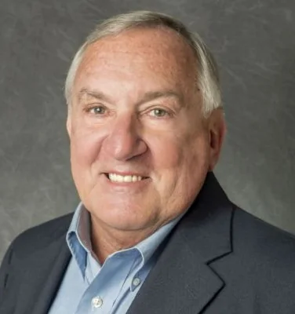
Robert (Bob) Cook
Bob is a Wisconsin native who relocated to Indiana to attend Purdue University, graduating from the Krannert School in 1973 with a BS in Industrial Management and Marketing. His lifelong interests include electronics, technology, ocean sailing, international travel, financial modeling, investments and real estate. He entered the real estate business in 1974 as a founding partner with a very successful commercial and residential firm for 7 years.
In 1983 Bob relocated to Naples, Florida where he pivoted into the yachting industry first as a USCG, licensed yacht captain, and yacht broker for the owners of sailing and power yachts in the US and internationally. Bob taught sailing for the US Navy and has instructed thousands of sailing students in open ocean sailing. Bob has sailed a cumulative 150,000 nms over 20 years including ocean yacht racing across the Atlantic Ocean. In 2003 Bob became an independent weather and routing consultant for the owners and captains of large private yachts, power and sail, making extended open ocean passages globally.
In 2019 Bob affiliated with Coldwell Banker Commercial Realty in Naples, Florida, covering the sale of commercial and residential properties across Southwest Florida. He was a member of NAR, FAR, NABOR and the CCIM Institute. In 2022 Bob joined Rock Lake Advisors as Managing Director in the real estate area. Bob lives in the Atlanta, Georgia.
In 1983 Bob relocated to Naples, Florida where he pivoted into the yachting industry first as a USCG, licensed yacht captain, and yacht broker for the owners of sailing and power yachts in the US and internationally. Bob taught sailing for the US Navy and has instructed thousands of sailing students in open ocean sailing. Bob has sailed a cumulative 150,000 nms over 20 years including ocean yacht racing across the Atlantic Ocean. In 2003 Bob became an independent weather and routing consultant for the owners and captains of large private yachts, power and sail, making extended open ocean passages globally.
In 2019 Bob affiliated with Coldwell Banker Commercial Realty in Naples, Florida, covering the sale of commercial and residential properties across Southwest Florida. He was a member of NAR, FAR, NABOR and the CCIM Institute. In 2022 Bob joined Rock Lake Advisors as Managing Director in the real estate area. Bob lives in the Atlanta, Georgia.
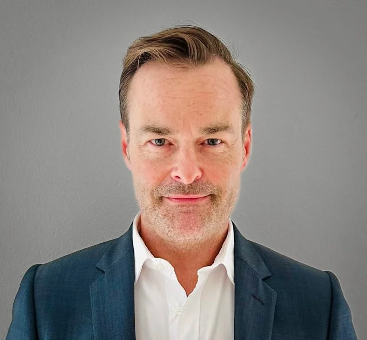
David Ryce
David has over 17 years of experience within Canadian and American Real Estate Institutional Investment firms and Banks including Brookfield Properties, CIBC World Markets and Morgan Stanley. At Morgan Stanley David was responsible for asset management and investment valuations for all EMEA Real Estate investments within the NHREF Opportunistic Real Estate Funds. At CIBC World Markets as a member of their Real Estate Investment Banking group, he underwrote over $3.8Bn of Canadian Real Estate.
David graduated with a B.Sc. Biology and Environmental Science (Honours) from the University of Western Ontario in London, Canada. He also obtained an MBA with a Real Estate specialization as well as an additional Diploma in Real Property Development from the School of Business at York University in Toronto, Canada. David is an active member of RICS and the ULI. He lives in Zurich with his wife and two daughters and speaks English and German.
David graduated with a B.Sc. Biology and Environmental Science (Honours) from the University of Western Ontario in London, Canada. He also obtained an MBA with a Real Estate specialization as well as an additional Diploma in Real Property Development from the School of Business at York University in Toronto, Canada. David is an active member of RICS and the ULI. He lives in Zurich with his wife and two daughters and speaks English and German.
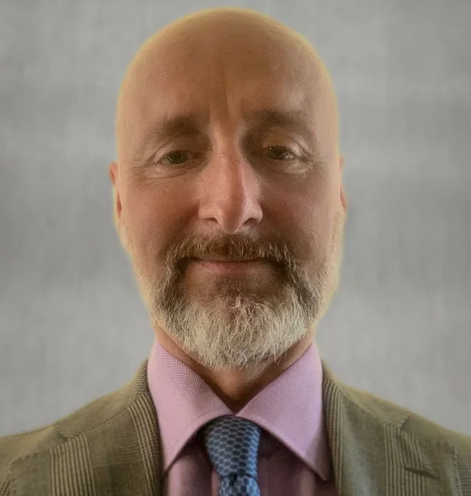
Mark Banham
Mark has over 25 years of legal, regulatory, structuring and business development experience in Financial Services. He has held senior legal, compliance and product development executive roles in a number of firms in asset management (HSBC Alternatives, Skandia / Old Mutual Asset Management, Blackstone), credit and mortgage provision (Castle Trust Bank), and insurance (Phoenix Group, Ignis Asset Management). After qualifying as a barrister, Mark worked at Hogan Lovells in their Financial Services practice in London where he specialised in Alternative Funds.
Most recently, Mark worked in Blackstone’s Multi-Asset business unit in London supporting marketing to their EMEA clients of multi-asset hedge fund portfolios, multi-strategy & single strategy offering (mainly Structured Risk Transfers). He was head of legal of Ignis (the asset management business of the Phoenix Group) where he was responsible for setting up a range of Hedge Fund, CLO, Leveraged Loan, Property & Private Equity funds. He was a founding member of the executive team of Castle Trust, a new UK mortgage lending business backed US Private Equity firm J.C. Flowers & Co where he acted as General Counsel and Compliance Officer.
He holds a BA (Hons) & Master of Arts in Economics from Cambridge University, a Post Graduate Diploma in Law and was called to the Bar of England & Wales (Inner Temple) as a Barrister-at-Law. He lives in London with his two sons and a daughter.
Most recently, Mark worked in Blackstone’s Multi-Asset business unit in London supporting marketing to their EMEA clients of multi-asset hedge fund portfolios, multi-strategy & single strategy offering (mainly Structured Risk Transfers). He was head of legal of Ignis (the asset management business of the Phoenix Group) where he was responsible for setting up a range of Hedge Fund, CLO, Leveraged Loan, Property & Private Equity funds. He was a founding member of the executive team of Castle Trust, a new UK mortgage lending business backed US Private Equity firm J.C. Flowers & Co where he acted as General Counsel and Compliance Officer.
He holds a BA (Hons) & Master of Arts in Economics from Cambridge University, a Post Graduate Diploma in Law and was called to the Bar of England & Wales (Inner Temple) as a Barrister-at-Law. He lives in London with his two sons and a daughter.
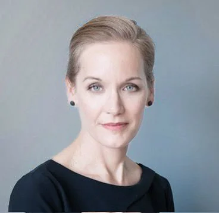
Laura Hermann
Laura Hermann is a change management strategist with expertise in global energy infrastructure systems. Her background in fission, fusion and battery metals includes change management efforts related to technology adoption and supply chain development. She works across public-private partnerships to facilitate investment, systems change and market creation.
As an advisor to investors and their portfolio companies, Laura helps navigate necessary activities related to technology transfer, stakeholder engagement, and market definition. She develops curricula and advises national leaders on efforts in numerous countries to establish new civilian nuclear programs while a consulting expert at the International Atomic Energy Agency and a twenty-year member of the American Nuclear Society.
Laura’s focus on controversial science and engineering projects began while building an international practice group for a DC-based public relations company. Her evidence-based approaches to improving outcomes led to important achievements in the development of new energy supply chains and the introduction of new electricity generation options in Asia, the Middle East, and Europe.
As an advisor to investors and their portfolio companies, Laura helps navigate necessary activities related to technology transfer, stakeholder engagement, and market definition. She develops curricula and advises national leaders on efforts in numerous countries to establish new civilian nuclear programs while a consulting expert at the International Atomic Energy Agency and a twenty-year member of the American Nuclear Society.
Laura’s focus on controversial science and engineering projects began while building an international practice group for a DC-based public relations company. Her evidence-based approaches to improving outcomes led to important achievements in the development of new energy supply chains and the introduction of new electricity generation options in Asia, the Middle East, and Europe.
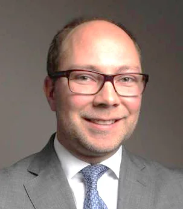
Andreas Tornblad
Andreas Törnblad is an experienced professional with some 15 years of expertise in management consulting, investment banking, and corporate finance. He developed a strong analytical and structuring spike in complex situations through his tenure at McKinsey & Company and Lincoln International. At Lincoln, Andreas specialized in M&A transactions, advising clients on mid-market corporate deals and equity capital markets.
Andreas has an entrepreneurial track record, founding Lawline.se - a legal platform that serves thousands of clients annually. He also has extensive experience in fundraising. In recent years, Andreas has focused on pioneering sustainable investments. As Chief Investment Officer at Rockton, he co-led a strategic pivot toward sustainable aviation.
Andreas holds dual advanced degrees: a Master of Economics and Business Administration from the Stockholm School of Economics, specializing in accounting and financial management, and a Master of Laws from Stockholm University. His broad experience and global perspective further enhance his ability to deliver value in diverse and challenging environments.
Andreas has an entrepreneurial track record, founding Lawline.se - a legal platform that serves thousands of clients annually. He also has extensive experience in fundraising. In recent years, Andreas has focused on pioneering sustainable investments. As Chief Investment Officer at Rockton, he co-led a strategic pivot toward sustainable aviation.
Andreas holds dual advanced degrees: a Master of Economics and Business Administration from the Stockholm School of Economics, specializing in accounting and financial management, and a Master of Laws from Stockholm University. His broad experience and global perspective further enhance his ability to deliver value in diverse and challenging environments.
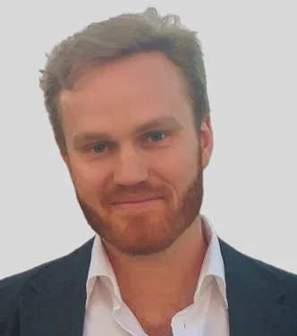
Felix Haas
With 12 years of experience, Felix Haas has worked in management consulting (Synpulse), insurance (Swiss Re), and the start-up world (discovermarket). He has held a variety of roles, most with a strategy or commercial focus, often in a deal environment. He has held commercial country responsibility, had ownership of European M&A activities (both at iptiQ by Swiss Re), and led various commercial and project management teams. As a qualified Swiss Actuary, Felix has a wide technical understanding of the insurance and finance industry. He has honed his experience in addressing strategic and capital challenges primarily in greenfield, start- and scale-up environments. Felix holds master’s degrees in physics (University of Potsdam and the German particle accelerator DESY) and mathematics (University of Münster). He speaks German, English, Spanish, French and lives in greater Zurich, Switzerland.
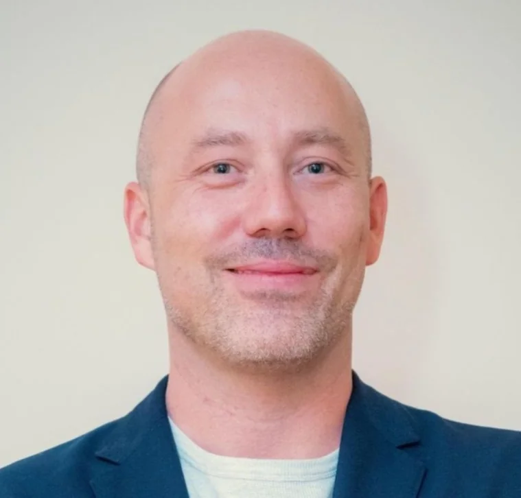
Laurent Monod
Laurent Monod is a Swiss financial executive with more than 25 years of international experience in wealth management, private banking, and private markets. He is a Partner at Rock Lake Advisors, where he supports capital formation mandates and international investor coverage. He is the founder of Wealth Strategy, an Independent Partner Family Office based in Zug, Switzerland. As a full Family Office-As-A-Service (FOAS) platform, Wealth Strategy delivers fractional Family Office services enhanced by proprietary diagnostic methodology and deep structuring and management expertise. Laurent is also founding partner of Corecam Family Office Ltd, an FSRA-regulated fund management company in Abu Dhabi (ADGM). He previously established and managed Corecam AG, a FINMA-regulated asset manager in Zurich, where he served on the Executive Committee, led the firm’s global digital transformation, and managed client relationships across Europe, the Middle East, and Asia. Laurent previously held senior roles at UBS, HSBC, and Union Bancaire Privée. He is also a shareholder-director of a Singapore-regulated Variable Capital Company (VCC), an umbrella fund platform focused on high-growth technology investments in partnership with leading strategic investors. In addition, he advises several VCCs and sub-funds active in direct investments into Private Debt, Private Equity, Venture Capital, and Infrastructure. Laurent holds an Executive MBA in Global Management (with distinction) from Thunderbird (Arizona State University), a Master’s degree in International Relations from the Graduate Institute of Geneva and the UBS Wealth Management Diploma. Fluent in French, English, Russian, and German.
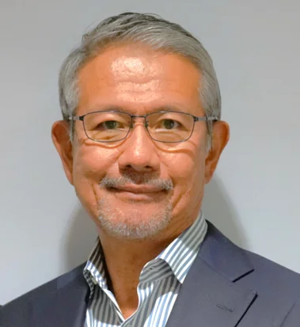
Hiroshi Hamada
Hiroshi Hamada is an experienced global executive and board director with a long track record leading international businesses across financial services, technology, and corporate transformation. He is the Founder and CEO of Gennaker Corporation and serves on the Board of the Arizona State University Foundation. He also founded and leads the Thunderbird School of Global Management Foundation in Japan and contributes to Thunderbird’s global governance through several advisory roles. Previously, Hiroshi was Chairman, CEO, and President of SBI ARUHI, Japan’s largest mortgage bank, where he led a Carlyle-backed management buy-in, drove strong profitable growth, and guided the company to a successful IPO on the Tokyo Stock Exchange. Earlier, as COO and Representative Executive Officer of HOYA Corporation, he directed major post-merger integration and restructuring across multiple global business lines. He also held senior leadership roles at Dell, serving as President of Dell Japan and Dell Korea and delivering significant market-share and revenue expansion.
Hiroshi holds a Master of International Management from the Thunderbird School of Global Management and a BA from Waseda University.
Hiroshi holds a Master of International Management from the Thunderbird School of Global Management and a BA from Waseda University.
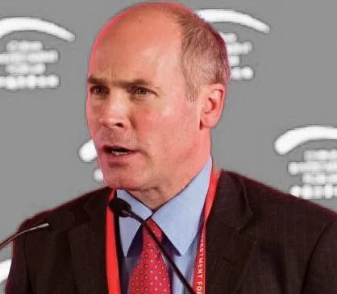
David Keresztes
David Keresztes is a principal at Central Europe Trust (CET), an advisory and private equity firm co-founded in 1989 by Lord Lawson (who served as chancellor under Baroness Thatcher and was of Central & East European (CEE) descent) where he is primarily focused on transactions involving financial sponsors. Prior to CET, David founded Ujházy & Co., an advisory boutique focused on privatization and private equity, including a structured mandate from CEE venture capital/private equity firm Euroventures focused on fundraising and investing. Previously, he was a principal at The Riverside Company, a global private equity firm, where he was involved in fundraising and investing in SMEs in CEE. Before Riverside, David worked as an associate at Sanwa Duval, an advisory boutique backed by Sanwa, then the third-largest bank in the world, and founded by Michael Duval, formerly advisor to Presidents Nixon and Ford and later on the management committee of First Boston, with co-founders from Goldman Sachs, Merrill Lynch, Salomon Brothers and Drexel Burnham Lambert. David began his career as a financial analyst at Goldman Sachs, where he was involved in public/private offerings of equity/debt, corporate/financial restructurings, M&A and asset finance/leasing. He is a graduate of Columbia University with an honors degree in economics and natural sciences and passed FINRA General Securities Representative Examination (Series 7) and NASAA Uniform Securities Agent State Law Examination (Series 63).
Advisory Board
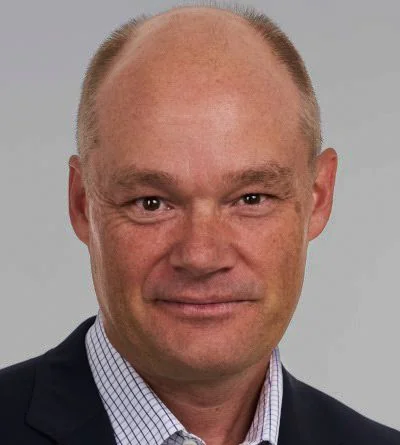
Filip Henzler
With 25 years of experience in finance and as a hands-on turn-around manager, Filip Henzler has developed unique skills and know-how leading complex projects and change management situations with a focus on bottom line results. Filip started his career with a boutique M&A-advisory firm (Arthur Andersen Global Corporate Finance, Zurich). He was part of the founding team of Capital Dynamics, a global private equity asset management firm where he led the structured transaction team with many ground-breaking and highly successful transactions as well as the build-up of the back office and fund administration departments. The last 15 years he worked as an expert turn-around advisor for seven different companies in industries such as machine building, e-commerce, self-adhesive label printing, e-commerce, cartography and bio-tech. His key strength is combining legal and financial due-diligence, planning and execution with profound knowledge and experience in operations, management control, legal and tax structuring. Filip holds a lic. oec. in economics and finance from the University of Zürich.
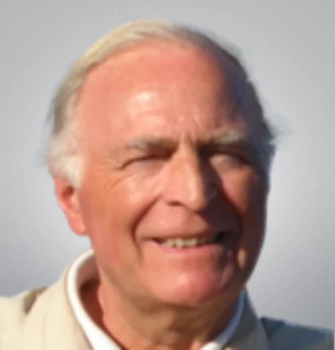
Robert J.W. Van den broeck
Robert J.W. Van den broeck has more than 50 years of international banking and corporate management experience. He serves as independent director on several Boards and is an Advisory Board member in a few companies. Furthermore he is active in management consulting through his company Hudson Finance nv, focussing on strategy, organization, corporate finance and M&A.
He was co-founder and chairman of Privast Capital Partners, a venture capital fund in Brussels, which he started in 1999 and which was liquidated in 2012, after the exit of 13 portfolio companies in the Benelux, France and the U.K. In the past he held senior management positions with Exxon, Citibank and Bank Brussels Lambert, and until 1996 he was Managing Director and CEO of Plouvier-Kreglinger, an international transport, trading and investment group, based in Antwerp. Until 2016 he was a consular judge at the Commercial Court of Antwerp.
He holds a Master degree in commercial engineering (“ingénieur commercial”), as well as in applied economics from Antwerp University, and an MBA from INSEAD, Fontainebleau in France.
Past independent directorships include: Barco, Bank Indosuez Belgium, Bank Corluy, LBC Tank Terminals, De Smet Group, and V.E.V.
Languages: Dutch, French, English, German, Italian and Russian.
He was co-founder and chairman of Privast Capital Partners, a venture capital fund in Brussels, which he started in 1999 and which was liquidated in 2012, after the exit of 13 portfolio companies in the Benelux, France and the U.K. In the past he held senior management positions with Exxon, Citibank and Bank Brussels Lambert, and until 1996 he was Managing Director and CEO of Plouvier-Kreglinger, an international transport, trading and investment group, based in Antwerp. Until 2016 he was a consular judge at the Commercial Court of Antwerp.
He holds a Master degree in commercial engineering (“ingénieur commercial”), as well as in applied economics from Antwerp University, and an MBA from INSEAD, Fontainebleau in France.
Past independent directorships include: Barco, Bank Indosuez Belgium, Bank Corluy, LBC Tank Terminals, De Smet Group, and V.E.V.
Languages: Dutch, French, English, German, Italian and Russian.
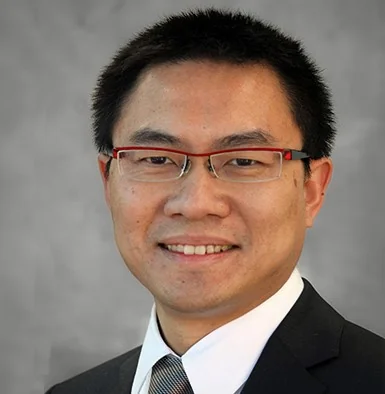
Jason Yap
Jason Yap is a Senior Executive with over 18 years of experience in the Pharmaceutical and Biotechnology industries.
He has worked for a range of large, mid-size and pharma/biotech startups. Jason Yap is an experienced executive with a special focus on regulatory drug development, having overseen various early (pre-Phase I) and late stages (Phase II-III) development assets through to commercialization in global markets including the USA, EU and rest of the world. Additionally, Jason Yap has developed developmental expertise in diverse therapeutic areas such as oncology, rare diseases, autoimmune and cardiovascular diseases.
Jason Yap has an Executive MBA in General Management from the Thunderbird School of Global Management. Additionally, he holds a Masters Degree in Toxicology and Bachelor Degree in Biochemistry.
He has lived in Malaysia, UK and USA, and over the last ten years, in Switzerland.
He has worked for a range of large, mid-size and pharma/biotech startups. Jason Yap is an experienced executive with a special focus on regulatory drug development, having overseen various early (pre-Phase I) and late stages (Phase II-III) development assets through to commercialization in global markets including the USA, EU and rest of the world. Additionally, Jason Yap has developed developmental expertise in diverse therapeutic areas such as oncology, rare diseases, autoimmune and cardiovascular diseases.
Jason Yap has an Executive MBA in General Management from the Thunderbird School of Global Management. Additionally, he holds a Masters Degree in Toxicology and Bachelor Degree in Biochemistry.
He has lived in Malaysia, UK and USA, and over the last ten years, in Switzerland.
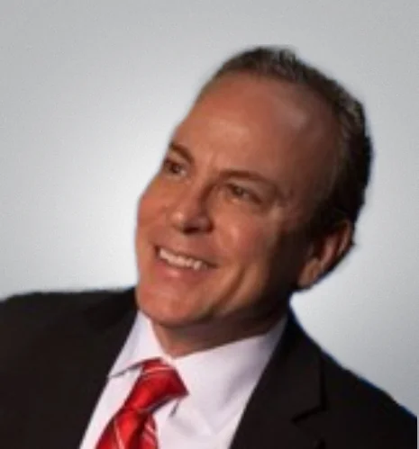
John Murray
John Murray is a Global Marketing and Digital Strategy executive with commercial and technical experience in a wide range of industries, including digital health, FMCG, greentech, insurtech, traveltech, martech, consumer electronics, data and construction chemicals. With 35+ years’ experience, John has held senior-level positions within Fortune 500 and startup companies in the US and Europe where he has led business expansion, strategic partnerships, and digital transformation initiatives in over 55 countries worldwide. In his most recent corporate role, he led global performance partnerships for the smoke-free division of Philip Morris International and prior to that held similar positions at Markel Corporation, Blue Cross Blue Shield, InfoGroup and Coleman. John has been a co-founder of three different startups and a participant in various innovation hubs and technology accelerators. He received his MBA in International Management from Thunderbird School of Global Management at Arizona State University. John is based in Geneva and speaks French, Italian, German and Spanish.
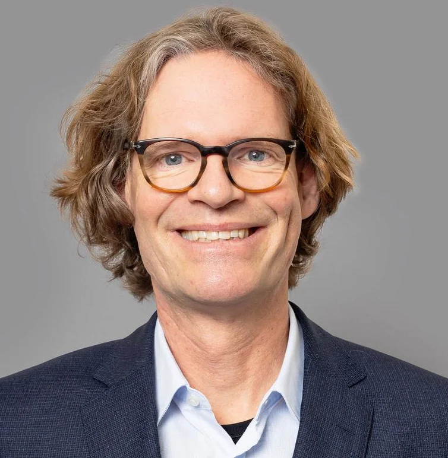
Martin Schweikhart
Martin Schweikhart, former head of Global Sales Strategy, Product Structuring & Product Development at Man Group Plc, has over 24 years of experience in the financial industry.
Martin is an experienced senior executive in product development, product lifecycle management, financing & legal with specialist knowledge of mutual funds worldwide in particular UCITS but also alternatives funds in particular hedge funds, private debt and fund linked structured products.
Since 2019, Martin is an independent consultant advising several clients in particular Pacific Investment Management Company LLC (PIMCO). He is also an independent director of funds and asset managers and the non executive chairman of Man Investments AG, Switzerland.
From 2000 until 2017 Martin worked in several senior positions for Man Group Plc in particular head of Global Sales Strategy and Head of Product Development & Management, Fund Financing & Brokerage.
Martin holds a law degree (Zweites Juristisches Staatsexamen) from the University of Mainz, Germany, and a post-graduate qualification as LL.M. from the University of Hong Kong. Martin is a qualified lawyer in Germany.
He has been appointed as expert witness for structured hedge fund products by the district court of Zurich and supports clients in financial litigation.
Martin is an experienced senior executive in product development, product lifecycle management, financing & legal with specialist knowledge of mutual funds worldwide in particular UCITS but also alternatives funds in particular hedge funds, private debt and fund linked structured products.
Since 2019, Martin is an independent consultant advising several clients in particular Pacific Investment Management Company LLC (PIMCO). He is also an independent director of funds and asset managers and the non executive chairman of Man Investments AG, Switzerland.
From 2000 until 2017 Martin worked in several senior positions for Man Group Plc in particular head of Global Sales Strategy and Head of Product Development & Management, Fund Financing & Brokerage.
Martin holds a law degree (Zweites Juristisches Staatsexamen) from the University of Mainz, Germany, and a post-graduate qualification as LL.M. from the University of Hong Kong. Martin is a qualified lawyer in Germany.
He has been appointed as expert witness for structured hedge fund products by the district court of Zurich and supports clients in financial litigation.
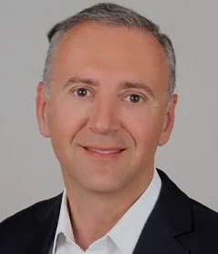
Ivan Belga
Ivan Belga brings over 25 years of experience in wealth management, investment banking and corporate finance to Rock Lake Advisors. Ivan is Senior Manager at Abu Dhabi Commercial Bank Wealth Management with senior responsibility for building the bank’s CIS regional private client practice. Prior to joining ADCB, Ivan was a Senior Private Banker with Vontobel and Pictet. He spent several years with UBS Wealth Management advising Ultra High Net Worth clients from Eastern Europe and set up a Russian desk at UBS Monaco. Ivan also advised on cross-border mid-market M&A transactions in Russia and Ukraine (2002-2008). He started his career in Corporate finance with Renault in the Netherlands and later with Alstom in Paris where he led a large finance reengineering project and set up the Investor Relations department after the IPO. Ivan graduated from Marseille Business School (now Kedge), received his MBA from HEC Paris and studied sustainable finance at the University of Zürich. He lives in Zurich and speaks French, English, Russian, German and Dutch.